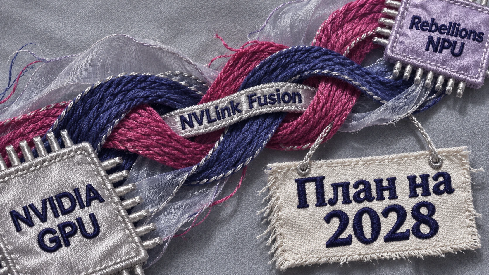
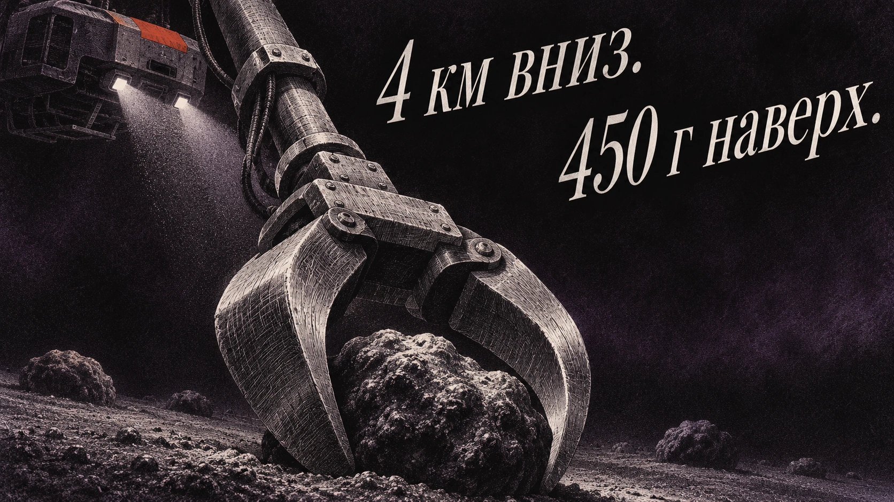
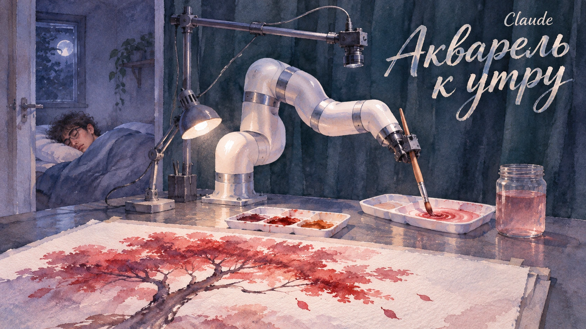

Инженерия и устройства
Роботы, оборудование, проектирование и физические устройства.
27 ноября 2026

24 ноября 2026

Четыре необычных эксперимента с ИИ: от проектирования дома до управления роботом
Сделано с ИИЧетыре авторских эксперимента с ИИ: агенты проектируют дом, камеры наблюдают за рестораном, Claude пишет код для роборуки и нажимает аппаратную кнопку перезагрузки.

В США испытали роботов, которые сами ищут военные цели
Новости ИИНа полигоне Форт-Нокс DARPA испытала четырёх автономных наземных роботов: машины сами обследовали местность и обнаруживали условные цели, а решение об ударе принимал человек.
17 ноября 2026

16 ноября 2026

Runway открыла ИИ для роботов, обученный на обычных видео
Новости ИИRunway открыла веса и код модели Praxis-1 для управления роботами по Apache 2.0. Обученный на видеозаписях ИИ предсказывает движения; в симуляционном тесте RoboLab-120 показал 46,2% успешных попыток.

Agile Robots привлекла $500 млн на производство роботов
Новости ИИНемецкая Agile Robots получила $500 млн инвестиций при оценке $8,5 млрд. Завод компании под Мюнхеном рассчитан на выпуск до 10 тысяч гуманоидов в год; это проектная мощность, а не фактический объём.
14 ноября 2026

12 ноября 2026

ИИ научили варить металл. Теперь ему хотят доверить целый завод — и дали на это $300 млн
Новости ИИPath Robotics привлекла $300 млн в раунде Series E при оценке $2,45 млрд. Разработчик ИИ-сварки Obsidian намерен расширять роботизацию на другие производственные задачи.

Европа хочет свой ИИ для поиска военных целей: Helsing бросает вызов Palantir
Новости ИИHelsing намерена 11 ноября представить в Берлине военную систему ИИ для европейских армий, конкурирующую с Palantir Maven. Пока название, характеристики и покупатели нового продукта не раскрыты. Reuters сообщило об анонсе 10 ноября.

Google испытала Gemini Robotics 2.5 на заводах Mercedes-Benz: 96% удачных операций
Новости ИИGoogle DeepMind представила Gemini Robotics 2.5 — модель для управления роботами. На заводах Mercedes-Benz гуманоид Apollo 2 от Apptronik сортировал металлические детали с заявленной успешностью 96%; компания также сообщила об улучшениях в лабораторных задачах.

Amazon отправит дроны патрулировать квартиры
Новости ИИAmazon представила две системы охраны Ring: летающую Drone Cam для квартир и колёсного робота Rover Cam для магазинов и офисов. Обе используют ИИ-навигацию, старт поставок в США обещан на декабрь 2026-го и январь 2027 года.
11 ноября 2026

NVIDIA соединит свои GPU с корейскими ИИ-чипами. Первые системы — в 2028 году
Новости ИИNVIDIA, Rebellions и SK Telecom договорились разработать платформу с GPU NVIDIA и корейскими ИИ-ускорителями Rebel R200, соединёнными через NVLink Fusion. GPU будут обрабатывать начальный запрос, NPU — генерировать ответ; готовность систем R200 к развёртыванию ожидается в 2028 году.

ИИ-робот нырнул на 4 км за металлами. Улов — 450 граммов
Новости ИИImpossible Metals сообщила о сентябрьском испытании подводного робота Eureka в Тихом океане: аппарат на глубине более 4 км собрал около 450 г полиметаллических конкреций. Компания утверждает, что ИИ помогает выбирать камни без видимых морских организмов; независимая экологическая оценка расширенной системы намечена на 2027 год.

Инженер лёг спать. Claude сам смешал краски и нарисовал акварель
ИИ, ты чего творишь?Инженер Нил рассказал о ночном эксперименте: роботизированная система под управлением Claude рисовала акварель и, по его словам, самостоятельно смешивала дополнительные оттенки; результат — 303 мазка за четыре с половиной часа.

MIT научил роботов понимать намёки человека
Новости ИИИсследователи MIT и Нью-Йоркского университета представили FLEX — экспериментальную систему, которая с помощью GPT-4o обобщает человеческие замечания и корректирует поведение роботов, например обходя электронику при переноске кофе.